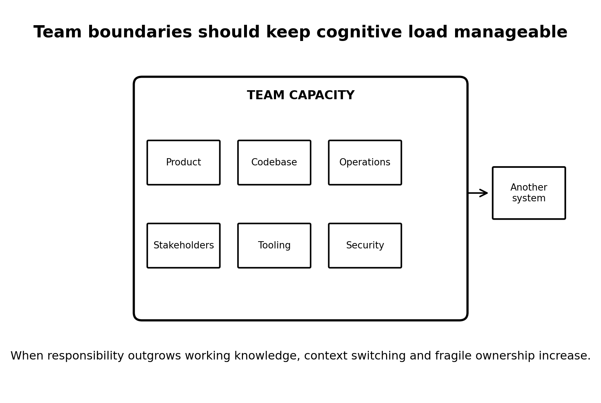
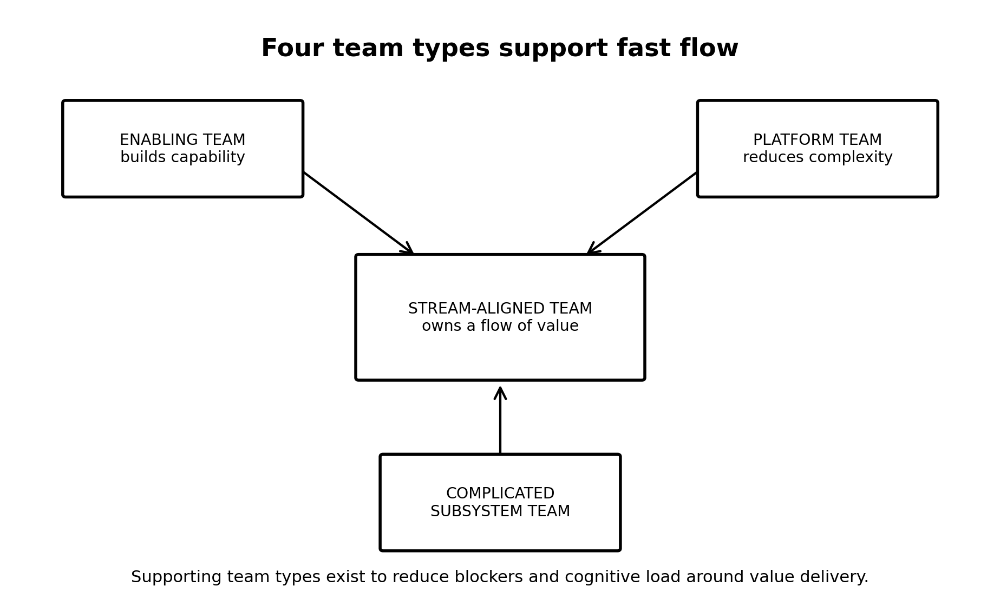

Daily lesson ·
Team Topologies
Treat team boundaries and interaction patterns as part of the software-delivery system, constrained by finite cognitive capacity.
Idea 1
Treat cognitive load as an architectural constraint #
The idea
The authors argue that a team should own a coherent amount of software, domain knowledge, operational responsibility, tooling and business context that its members can realistically understand.
When responsibility grows too broad, delivery slows because more effort goes into navigating complexity, switching context and reconstructing knowledge. Team boundaries should therefore reflect cognitive limits, not just reporting lines.

Why it matters
A workload problem can masquerade as a performance problem. Pressure may worsen context switching, forgotten details and fragile ownership when the real issue is excessive cognitive breadth.
Apply it today
List everything one team must understand to make a safe production change: rules, repositories, databases, deployment, infrastructure, integrations, support, approvals and stakeholders.
Circle the item consuming substantial mental effort but contributing least to the core value stream. Consider simplification, automation, platform support or reassignment.
Caveat or failure mode
Cognitive load can become a vague excuse for avoiding difficult work. Some complexity is intrinsic to the domain and should remain close to the people making the relevant decisions.
Reinforcement questions
- Why does assigning another responsibility have a cost even when it creates no immediate ticket?
- A capable team owns nine applications with different deployments, databases and stakeholders. What would you investigate before asking the developers to work faster?
Idea 2
Make stream-aligned teams the centre #
The idea
The first-edition framework defines four fundamental team types. Stream-aligned teams own a meaningful flow of work and deliver value end to end. Enabling teams build capability, complicated-subsystem teams contain specialist complexity, and a platform capability offers internal services that reduce unnecessary complexity. Later guidance emphasises that the platform may be a grouping of several team types operating as an internal product.
The supporting types exist to improve the stream-aligned team's flow, not to recreate permanent functional silos with new labels.

Why it matters
Functional silos can optimise specialist utilisation while creating queues between specialists. A stream-aligned design instead makes the flow of change the primary unit of optimisation.
Apply it today
Take one recent enhancement and map its path from request through analysis, development, infrastructure, approval, deployment and support.
Mark where work stopped for another team. Target the handoff with the most waiting relative to actual work, not simply the busiest-looking group.
Caveat or failure mode
End-to-end ownership does not require every specialist inside every team. Deeply specialised components can justify a complicated-subsystem team, and a good platform can avoid duplicating expertise.
Reinforcement questions
- What makes a stream-aligned team different from a traditional frontend or database team?
- A feature takes two days to develop and six waiting on infrastructure and deployment groups. What boundary or service would you examine first?
Idea 3
Give every relationship an explicit interaction mode #
The idea
Team Topologies names three deliberate interaction modes: collaboration for high-bandwidth discovery, X-as-a-Service for consuming a capability through a clear interface, and facilitation for temporary capability-building help.
Collaboration is intentionally expensive and should usually be time-bounded. A common path is to collaborate while uncertainty is high, then evolve toward a clearer service relationship when boundaries stabilise.

Why it matters
Without an exit condition, teams can spend months in each other's meetings and coordinate every change. Explicit modes make the dependency inspectable and adaptable.
Apply it today
Complete: For the next month, our relationship with Team X should be ___ because ___.
Then complete: We know the interaction can change when ___. If the last blank is impossible, the dependency may have no exit condition.
Caveat or failure mode
Real relationships can combine modes and change by task. Use the vocabulary to clarify intent, not to force every interaction into a permanent classification.
Reinforcement questions
- Explain the practical difference between collaboration and X-as-a-Service without repeating their definitions.
- Developers have paired with another team for six months because that team owns deployment. What mode exists now, what should it become, and what must change first?
Today's experiment · 7 minutes
Run a dependency audit
- Open the work item or release consuming the most coordination effort.
- List every external team required before value reaches the user.
- Mark each C for collaboration, S for X-as-a-Service, F for facilitation or ? for unclear.
- Count the question marks and choose the highest-friction unclear relationship.
Observable result: You finish with a number and one proposed interaction mode with an exit condition.
Verification
Source notes
These links support the attributed claims and edition details; applications and extensions are labelled in the lesson.
One-sentence takeaway